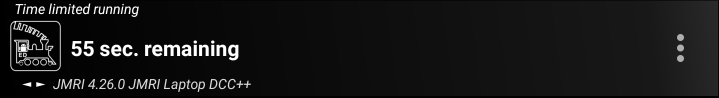

Advanced Operation
Consist Follow Functions
By default, in Engine Driver, if you activate a DCC function while controlling a Consist / Multiple Unit train only the function on the lead loco will actually be activated. Engine Driver provides options (preferences) that will activate the functions on the other locos in the Consist / Multiple Unit train given a number of possible rules.
The Consist Follow Functions page provides information on the different rule types and how to use them.
Conserving Power
If your Android device/phone runs out of battery too quickly you can try the some of the options on the Conserving Power page.
Children’s Timer
{kind=link}

Engine Driver provides options for time controlled running. This was originally intended for providing a way to have children have a fair share of the use of a loco, but can be used for timed control for any purpose.
Instructions:
Set the default time in the Children’s (Timer) Preferences to the desired time. (e.g. 5 minutes.)
Set the two passwords in the Children’s (Timer) Preferences to the desired passwords (default 0000 and 9999) plus and any other desired options.
Select the loco (Before starting the timer the first time).
Enable the time limited running to the desired time, using either:
the Time limited running preference, (then return to the Throttle Screen)
orthe action button (Show Timer button?)
The timer will start counting down with the first change in speed.
When the timer runs out:
Tap the overflow menu. Only the
Timeroption will be available.Tap
Timerand a password will be requested.Enter the password for either:
to restart the timer (default 0000) to continue running for the next time period.
to end/cancel running (default 9999) and return to the Throttle Screen.
While the timer is running, the
Timermenu option will always be available. You can use this to restart or end/cancel the timer at any time.
The end/cancel password will allow you to regain access to the full Engine Driver functionality, including the ability to change the loco, change the speed, etc.
Recommendations:
Enable Immersive Mode (Full Screen) to hide the system status bar and navigation bar.
Enable the Timer action bar button
Disable the Hardware Volume keys
Disable Swipe Through Turnouts/Points?
Disable Swipe Through Routes?
Disable Swipe Through Web?
Disable all the Action Bar buttons (except the Timer button)
Disable the Swipe Up and Swipe Down preferences
If you plan to allow reverse, then using one of the Switching/Shunting throttle screen layouts is easier to explain to children than layouts with the Forward/Reverse buttons.
Reduce the number of functions buttons to the minimum required. i.e. if you have locos with non-sound decoders, set the default to 1 (for the lights)
If you don’t have sound locos, then you may wish to enable the In Phone Loco Sounds